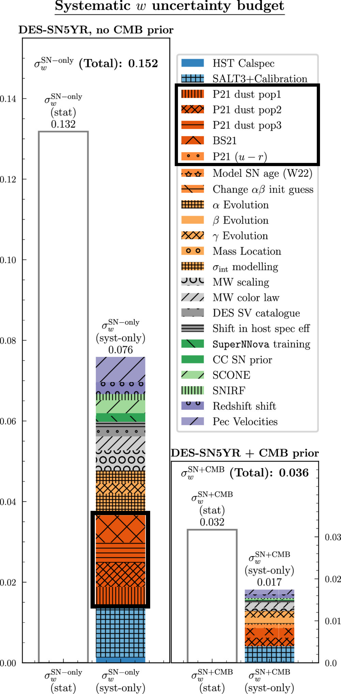

SNe Ia growth-rate measurements with Rubin-LSST simulations: intrinsic scatter systematics
B. Carreres, R. Chen, E. Peterson, D. Scolnic, D. Rosselli, C. Ravoux et al.

\(f\sigma_8\): a probe for gravity and dark energy
Image credits: Illustris TNG
How to estimate velocities from SNe Ia?
SNe Ia are standard candles that allow to measure distances and to build a Hubble diagram
Velocities can be expressed as
$\hat{v} = -\frac{c\ln10}{5}\left(\frac{(1 + z)c}{H(z)r(z)} - 1\right)^{-1}\Delta\mu$
In practice SNe Ia are not perfectly standard and the Hubble diagram residuals are noisy!

The intrinsic scatter of SNe Ia
We know that intrinsic scatter has a color dependance!
In this work we will consider 4 models of intrinsic scatter:
-
Random achromatic scatter
Unrealistic
-
The G10 model (Guy et al. 2010): $\sim 70\%$ achromatic / $\sim 30\%$ chromatic
Historically used (Pantheon, Pantheon+)
-
The C11 model (Chotard et al. 2011): $\sim 30\%$ achromatic / $\sim 70\%$ chromatic
Historically used (Pantheon, Pantheon+)
-
The BS21 model (Brout et al. 2021) with its parameters fitted in Popovic et al. 2023 (P23): dust-based model
Currently favored by data (DES 5 year)
Unrealistic
Historically used (Pantheon, Pantheon+)
Historically used (Pantheon, Pantheon+)
Currently favored by data (DES 5 year)
Why is SNe Ia intrinsic scatter a concern?
Intrinsic scatter is the most important systematic for the DES 5 year analysis of the dark energy equation of state parameter $w$ (Vincenzi et al. 2024).
Rubin-LSST Simulations
We used the SNANA software (Kessler et al. 2009) to simulate the 10 years of the Rubin-LSST survey!
Simulation of the SN Ia hosts
8 mocks cut from the (2 Gpc $h^{-1}$)$^3$ box of the Uchuu UniverseMachine galaxy catalog (Ishiyama et al. 2021,
Aung et al. 2023)
We simulated SN Ia parameters correlations with their host properties:
- SN Ia rate - Host mass correlation from Wiseman et al. 2021
- SN Ia parameters - Host mass correlation from Popovic et al. 2021

The SNe Ia simulated sample
$N_\text{SN} \sim O(50 \ 000)$


Building the Hubble diagram
Hubble diagram of SNe Ia:
x-axis: $z_\mathrm{obs}$ of the hosts
y-axis: distance modulus $\mu = 5\log(d_L / 10 \text{ pc}) = m-M$

Standard Method:
$\boldsymbol{\mu_\mathrm{obs}} = \boldsymbol{m_B} - \left({\color{red} M_B} - {\color{red} \alpha} \boldsymbol{x_1} + {\color{red}
\beta} \boldsymbol{c} + \boldsymbol{\Delta_M}\left(\mathbf{M_\mathrm{host}}; {\color{red} \gamma}\right)\right)$
$\boldsymbol{\sigma_\mu}^2 = \boldsymbol{\sigma_\mathrm{obs}}^2 + {\color{red}\sigma_\mathrm{int}}^2$
${\color{red}M_B}$, ${\color{red}\alpha}$, ${\color{red}\beta}$, ${\color{red}\gamma}$ and ${\color{red}\sigma_\mathrm{int}}$ will be
fitted along $f\sigma_8$
BBC method:
$\boldsymbol{\mu_\mathrm{obs, BBC}} = \boldsymbol{m_B} - \left({\color{red} M_B} - {\color{red}\alpha} \boldsymbol{x_1} +
{\color{red}\beta} \boldsymbol{c} + \boldsymbol{\Delta_M}\left(\mathbf{M_\mathrm{host}}; {\color{red}\gamma}\right)\right) +
\delta_\mathrm{corr.}$
$\boldsymbol{\sigma_\mu}^2 = \boldsymbol{\sigma_\mathrm{obs}}^2 + {\color{red}\sigma_\mathrm{int}}^2$
$\delta_\mathrm{corr.}$ is obtained by:
-
Running an extra-large simulations ($\sim40\times$ LSST) and fitting the hubble diagram
-
Binning over the parameters $p=\left\{z_\mathrm{obs}, x_1, c, M_\mathrm{host}\right\}$
-
Computing the correction in each cell $\delta_\mathrm{corr.} = \left<\mu_\mathrm{obs} - \mu_\mathrm{fid}\right>_\mathrm{cell}$
- Interpolate over the cells to obtain $\delta_\text{corr.}(p)$
${\color{red}M_B}$, ${\color{red}\alpha}$, ${\color{red}\beta}$, ${\color{red}\gamma}$ and ${\color{red}\sigma_\mathrm{int}}$ are
fitted prior to $f\sigma_8$
Fitting for $f\sigma_8$
We fit for $f\sigma_8$ using the Maximum likelihood method with the FLIP package (see Corentin' talk)
The data vector are the estimated velocities: $$\hat{v} = -\frac{c\ln10}{5}\left(\frac{(1 + z)c}{H(z)r(z)} - 1\right)^{-1}\Delta\mu$$ $$\Delta\mu = \mu_\mathrm{obs} - \mu_\mathrm{model}(z_\mathrm{obs})$$
The covariance of the velocity field is: $$\text{C}_{ij}^{vv} \propto ({\color{red}f\sigma_8})^2 \int_{k_\mathrm{min}}^{k_\mathrm{max}} P(k)D_u^2(k; {\color{red}\sigma_u}) W_{ij}(k; \mathbf{r}_i, \mathbf{r}_j) {\rm d}k $$ The observational covariance is: $$C^{vv, \mathrm{obs}} = \left[\frac{c\ln10}{5}\left(\frac{(1 + z)c}{H(z)r(z)} - 1\right)^{-1}\right]^2\text{diag}\left[\sigma_\mu^2\right]$$ The total covariance is: $\text{C} = \text{C}^{vv}({\color{red}f\sigma_8},{\color{red}\sigma_u}) + C^{vv, \mathrm{obs}} + {\color{red}\sigma_v}^2 \mathbf{I}$
Calibration of $\sigma_u$
Empirical damping introduced in Koda et al. 2014: $D_u = \text{sinc}(k\sigma_u)$
From a fit of true vel. from randomly sampled galaxies of the Uchuu simulation we found $\sigma_u \simeq 21 \text{Mpc }h^{-1}$
Results: Estimated velocities
We only consider SNe Ia at $0.02 < z < 0.1$, $N_\text{SN} \sim 8000$
Results: $f\sigma_8$ fit for different scatter model
- True vel. fit: unbiased, $\sigma_{f\sigma_8}\sim 5\%$
- RND - Similar results: $\sigma_{f\sigma_8}\sim 13\%$
- G10 - Similar results: $\sigma_{f\sigma_8}\sim 12\%$
- C11 - Similar results: $\sigma_{f\sigma_8}\sim 10\%$
- P23 - Standard fit: $\sigma_{f\sigma_8}\sim 14\%$
P23 - BBC fit: $\sigma_{f\sigma_8}\sim10\%$
P23 - BBC fit: $\sigma_{f\sigma_8}\sim10\%$
Results for P23 are biased by $\sim-20\%$ due to non-gaussianity!
Results: adding the B21 variations covariance
Bias correction re-run for variations of BS21 parameters => new covariance term $$\text{C}_{ij}^{\mu\mu, \mathrm{int. scat.}} = \Delta\mu_i^\mathrm{BS21}\Delta\mu_j^\mathrm{BS21} + \frac{1}{3}\sum_{p=1}^3\Delta\mu_i^{\mathrm{P23},p}\Delta\mu_j^{\mathrm{P23},p}$$ (from Vincenzi et al. 2024)
Results: the $\sigma_u$ systematic
$\Delta\sigma_u \sim 18.5 - 23.5 \text{ Mpc }h^{-1}$ ⇨ $\sigma_{f\sigma_8}^{\sigma_u}\sim6\%$

Conclusion
- Estimated PVs are unbiased using the BBC method compared to the standard method
- Correlations between hosts and SNe don't seems to bias $f\sigma_8$
- The BS21 model leads to non-gaussianity that bias the measurements of $f\sigma_8$
-
The uncertainty on the parameters of BS21 are not a major systematic for $f\sigma_8$
-
The parameter $\sigma_u$ is correlated with $f\sigma_8$ and we estimated the amplitude of this systematic to be $\sim6\%$
What's next?
- Is the BS21 model correct? Will we see this non-gausianity in data?
- Can we get rid of $\sigma_u$?
Thank you for your attention !
Full $f\sigma_8$ results

$\sigma_u$ syst. for G10